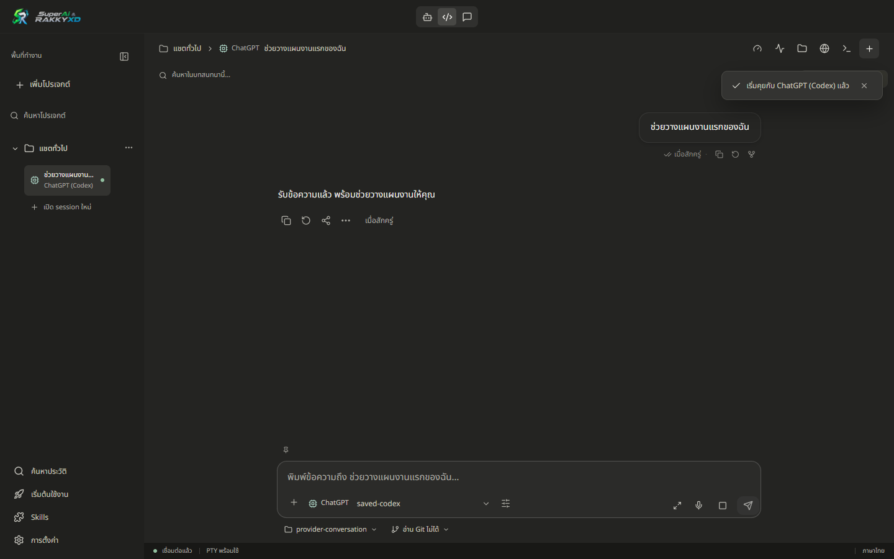
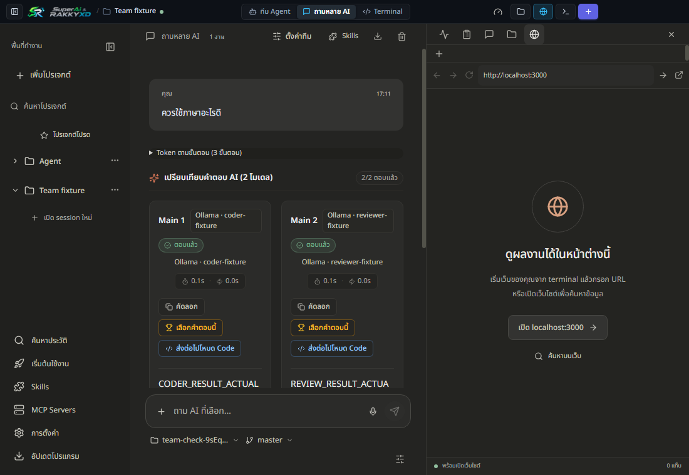
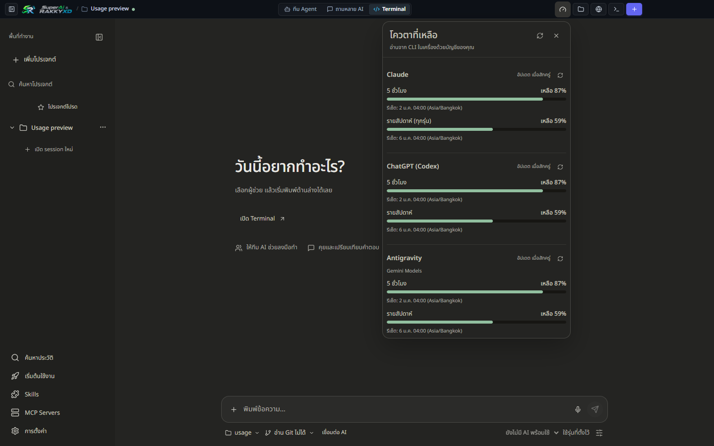

AI ทุกตัวของคุณ ในหน้าต่างเดียว
ดีไซน์ใหม่ เรียบหรู สบายตา โฟกัสกับการพัฒนาซอฟต์แวร์ได้อย่างเต็มที่
Claude · ChatGPT (Codex) · Antigravity · OpenCode · Freebuff · Ollama
รองรับ Windows และ macOS · หลายภาษา (ไทย, English, 日本語, 简体中文) · รันบนเครื่องคุณ 100% · ใช้บัญชี AI ของคุณเอง
ผู้ใช้งานจริง · วันนี้ 0 · 7 วัน 0 · 30 วัน 0
ไม่อยากติดตั้ง? ใช้ไฟล์ ZIP แบบ portable:
Windows ZIP ·
Mac Apple Silicon ZIP ·
Mac Intel ZIP
ดูประวัติทุกเวอร์ชันและสิ่งที่ปรับปรุง

สร้างมาเพื่อการทำงานกับ AI อย่างมีประสิทธิภาพ
รวมทุกฟีเจอร์ที่คุณต้องการไว้ในโปรแกรมเดียว ไม่ต้องเปิดหลายเบราว์เซอร์หรือสลับเทอร์มินัลไปมาอีกต่อไป
สวิตช์ 3 โหมดกะทัดรัด (Compact 3-Icon Switch)
สลับระหว่าง Agent (สั่งงานเป็นทีม), Code (CLI หลายแท็บในหน้าเดียว) และ Chat (ถามคำถามเดียวได้หลายมุมมอง) ได้ทันทีด้วยปุ่มไอคอนที่ประหยัดพื้นที่
Quick Provider Chat & Safe Mode
เปิดโปรแกรมแล้วเริ่มพิมพ์คุยกับ AI ได้ทันทีโดยไม่ต้องสร้างโฟลเดอร์หรือเตรียมโปรเจกต์ก่อน พร้อมระบบ Safe Read-only ป้องกันไฟล์ในเครื่องถูกแก้ไขโดยไม่ได้ตั้งใจ
Unified History & Full-Text Search
แผงประวัติรวมทุกเซสชันของทุก AI เข้าด้วยกัน ค้นหาข้อความคำสั่งและโค้ดที่เคยคุยได้แบบ Full-Text และกรองตามผู้ให้บริการ AI ได้ในคลิกเดียว
ซ่อนเซสชันโดยไม่ต้องลบ (Session Hide & Restore)
เปิดทำงานหลายหน้าต่างแล้วจอแน่น? พับเก็บเซสชันที่ไม่ใช้งานออกจากหน้าจอหลักได้ทันที โดยประวัติแชตและโปรเซสยังคงทำงานต่อ 100% พร้อมชิปเปิดกลับมาได้ตลอดเวลา
Git Worktrees & Smart Merge ในตัว
สลับ Git Branch จริงได้จากแถบเหนือช่องพิมพ์ พร้อมสร้าง Parallel Worktrees เพื่อให้ AI พัฒนาหลายฟีเจอร์พร้อมกันโดยไฟล์ไม่ชนกัน และรวมโค้ดกลับเข้า main ได้ในคลิกเดียว
Ctrl + Click เปิด URL ทันที (เหมือน Claude App)
พิมพ์หรือวาง URL ในช่องพิมพ์ข้อความหรือกล่องแชท สามารถกด Ctrl + Click เพื่อเปิดเว็บเบราว์เซอร์ของระบบทันที พร้อมแถบ Quick Link Chips ใต้ช่องพิมพ์
Interactive Artifacts Preview
ดูตัวอย่างผลงานแบบสด: HTML, SVG, Tailwind CSS, ไดอะแกรม Mermaid และทดสอบโค้ด React / JSX / TSX แบบอินเทอร์แอคทีฟบนเครื่องของคุณได้ทันที
พูดเพื่อพิมพ์ภาษาไทย (Local Whisper)
กดปุ่มไมค์ค้างไว้แล้วพูดภาษาไทย แปลงเสียงด้วยโมเดล Whisper Thonburian บนเครื่องคุณ 100% ปลอดภัย ไร้กังวลเรื่องข้อมูลเสียงรั่วไหล
ตรวจเช็คโควตาคงเหลือ (Usage Tracker)
ตรวจสอบโควตาที่เหลือของ Claude, Codex, Antigravity แบบเรียลไทม์ ทั้งรอบ 5 ชั่วโมงและรอบสัปดาห์ พร้อมเวลารีเซ็ตที่แม่นยำ
Cross-Agent Review & Security Audit
ให้ AI ตรวจสอบโค้ดซึ่งกันและกัน (เช่น Claude เขียนแล้วให้ Antigravity หรือ Codex ช่วยรีวิวหาช่องโหว่) พร้อมระบบรักษาความปลอดภัยเครือข่าย Localhost และ Folder Trust ในตัว
Self-Healing Automated Test Loop
วนรอบรันทดสอบและซ่อมแซมโค้ดอัตโนมัติเมื่อเทสต์ล้มเหลว โดย AI จะวิเคราะห์ Failure Summary และดำเนินการแก้บั๊กจนกระทั่งผ่านทุกการทดสอบ
Agent Skills Ecosystem & Cloudflare Audit
ติดตั้งและจัดการ Skill เพื่อขยายขีดความสามารถของ AI ได้ในคลิกเดียว รองรับคลัง Skill มาตรฐานจาก Anthropic, OpenAI, Vercel (skills.sh) และ Cloudflare Security Audit
ภาพการทำงานจริงในระบบ
ออกแบบให้ทุกโหมดทำงานร่วมกันได้อย่างลงตัว ทั้งการสั่งงานทีม Agent และการเทียบมุมมองในโหมด Multi-AI Chat


เช็คโควตา AI ได้ทุกตัวในพริบตา
ไม่ต้องเปิดหลายหน้าเว็บเพื่อดูว่าโควตาการใช้งานของแต่ละเจ้าเหลือเท่าไร

ติดตั้งง่ายใน 1 นาที
พร้อมใช้งานทันที ไม่ยุ่งยาก และไม่ต้องใช้สิทธิ์ผู้ดูแลระบบ
Windows
- ดับเบิลคลิกไฟล์ SuperAi-RAKKYXD-Setup.exe
- เลือกโฟลเดอร์ติดตั้ง แล้วกด ติดตั้ง
- รอแถบความคืบหน้ารอบโลโก้หมุนครบก็พร้อมใช้งานทันที
ถ้าขึ้น “Windows protected your PC” ให้กด More info แล้ว Run anyway
macOS 11 ขึ้นไป
- เปิดไฟล์ .dmg ที่ดาวน์โหลดมา
- ลากไอคอนแอปไปวางที่โฟลเดอร์ Applications
- เปิดโปรแกรมจาก Applications หรือ Launchpad
ถ้าเปิดครั้งแรกไม่ได้ ให้ไปที่ System Settings → Privacy & Security แล้วกด Open Anyway
เปิดใช้งานครั้งแรก
หน้า เริ่มต้นใช้งาน (Setup Guide) จะตรวจเช็คและติดตั้ง Node.js, Git และ CLI ของ AI ให้ทีละขั้น และให้คุณล็อกอินด้วยบัญชีของคุณเองอย่างปลอดภัย